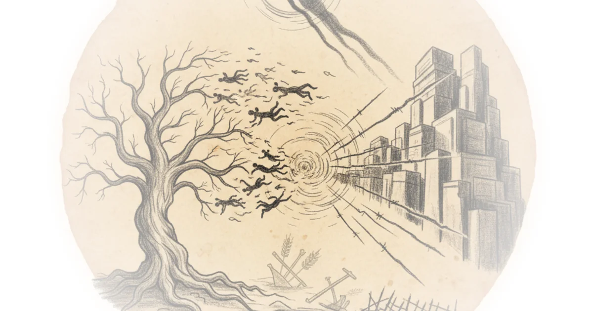
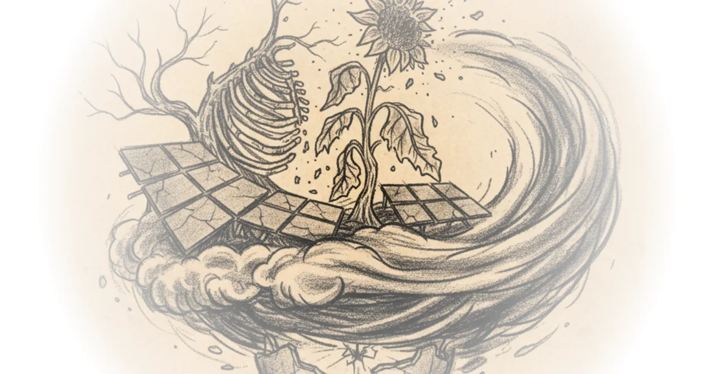

Siren Song: digging into the lure of food ecomodernism Chris Smaje · Chris's Substack ·Dec 7, 2025 · 14 min read · Culture
My constituents are ... leaving town Chris Smaje · Chris's Substack ·Oct 8, 2025 · 11 min read · Culture 
From Glastonbury to Gaza: no direction home Chris Smaje · Chris's Substack ·Aug 15, 2025 · 12 min read · Foreign Policy
Livestock and climate change further explained Chris Smaje · Chris's Substack ·Jul 28, 2025 · 15 min read · Culture
Go solar, go vegan and still collapse Chris Smaje · Chris's Substack ·Jul 21, 2025 · 10 min read · Culture 
No more heroes: or, seeking strong gods Chris Smaje · Chris's Substack ·Apr 15, 2025 · 13 min read · Faith